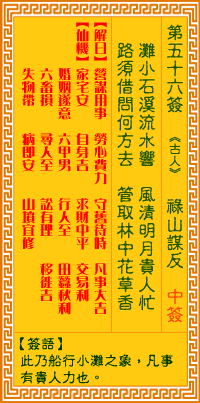

观音灵签第五十六签 【禄山谋反】 |
 | |||
涧小石粗流水响 力劳撑驾恐参伤 路须指出前江去 风静潮平尽不妨 |
||||
| 【吉凶】 | 中平签 | 【宫位】 | 丑宫 | |
| 【签语】 | 此卦船行小滩之象，凡事有贵人助也。 | |||
| 【解曰】 | 营谋用事 劳心费力，守旧待时 凡事大吉 | |||
| 【仙机】 | 此签家宅安，自身吉，求财中平，交易利，婚姻遂意，六甲男，行人至，田蚕秋利，六畜损，寻人至，讼有理，移徙吉，失物滞，病即安 ，山坟宜修。 | |||
| 【详解】 | 溪涧窄小又暗藏巨大的石块，使得流水经过时都发出激响，这样的情况下辛苦拚力前进恐怕会导致船体因此受到损伤;如果能够找出更适合的途径，如此才可风平浪静无所阻碍。 涧水滩多，掌船劳力，指出前江，风帆顺得。此签涧水行船之象，凡事先难后易。 本签是涧水行船之象。是凡事先难后吉者。虽是君尔力劳撑驾。恐有损伤。先是劳而无功。路顺指出前江去。自有风静浪平。一路顺风之时。必须更修身。积善。布施。天心感应之时。必有更上一层之列。易言之。涧小滩多掌船劳力指出前江风帆顺得。 此签有”功成身退”之意。意味当事人，凡事见好就收。任何事情在成功之前，都会经过努力的打拚、付出大量的心血，才能得到丰硕的成果。但在任务完成、功成名就之后，如何”见好就收”，才是最困难的考验。须知万事万物都没有一定的准则，既无法预料，也无从掌控。事情来了，就去面对，尽力去做，做完了，就要放下。凡事不要留存太多的眷恋，太多的眷恋只会让人更加执着，形成沉重的包袱丢不下。不要画地自限，适时地跳出束缚，才能随心所欲。凡事随缘，无须强求。 | |||
| 【典故】 | 安禄山是唐玄宗时人，骁勇善战，被升为都督。当时朝政腐败无能，安禄山就是从山西省造反，攻打洛阳，再攻下潼关，皇帝逃走到四川 。安禄山在长安大肆烧杀抢掠，人民激烈反抗。最后安禄山被自己的儿子杀死。 | |||